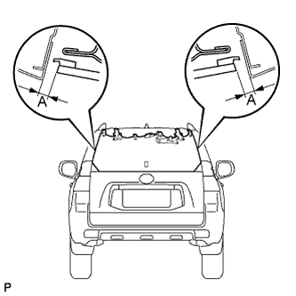
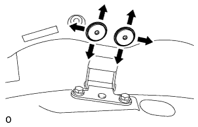
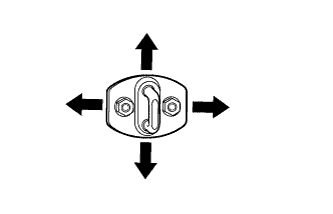

СТЕКЛО ДВЕРИ БАГАЖНОГО ОТДЕЛЕНИЯ (для моделей с механизмом открывания заднего стекла) > РЕГУЛИРОВКА |
| 1. ПОВЕРЬТЕ СТЕКЛО ДВЕРИ БАГАЖНОГО ОТДЕЛЕНИЯ |
|  |
Убедитесь, что измеренные зазоры на участках A находятся в допустимом диапазоне.
| Участок | Измерение |
| А | 5,05 - 8,05 мм (0,199 - 0,317 дюйма) |
| 2. ОТРЕГУЛИРУЙТЕ СТЕКЛО ДВЕРИ БАГАЖНОГО ОТДЕЛЕНИЯ |
|  |
С помощью торцевого ключа "TORX" T30 ослабьте болты на петле и отрегулируйте положение стекла двери багажного отделения.
После регулировки затяните болты петли на кузове с помощью торцевого ключа "TORX" T30.
|  |
Отрегулируйте положение защелки, немного ослабив крепежные гайки защелки.
После регулировки затяните гайки крепления защелки.